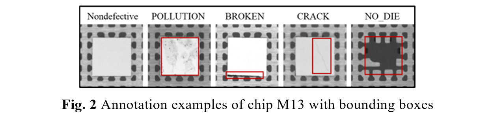

APChip Dataset
1 Real-world Data

Examples of Chip Ctegories
2 Synthetic Data


Surface defect detection is a critical aspect of advanced packaging chip manufacturing. In contrast to the vast datasets of everyday common objects, datasets related to defects, particularly in the industrial sector, are scarce due to low defect occurrence rates and confidentiality concerns. Public datasets specifically for semiconductor advanced packaging chips are virtually non-existent. To address this gap, we introduce the first publicly available versatile advanced packaging chip dataset for surface defect detection (APChip), encompassing over 45,000 images from 13 different chip models. This dataset includes both defect-free samples and four categories of defective samples: POLLUTION, BROKEN, CRACK, and NO_DIE, labeled with precise bounding box annotations. In addition, we conducted a series of defect detection experiments on this dataset, encompassing anomaly detection, fully-supervised classification, semi-supervised classification, and object detection, evaluating classical and advanced models to establish benchmark metrics for future research. The results demonstrate that the APChip dataset is well-suited for diverse requirements of defect detection tasks in advanced packaging chips. As a collection of real-world data, it accurately reflects the actual production conditions of versatile categories of chips, including defect morphology and data distribution, and can be utilized for versatile defect detection researches in the industrial sector, not limited to chips, thereby promoting advancements in semiconductor inspection and offering significant value to defect detection developments in other fields.
Thank you to the following units for their support and assistance.
.